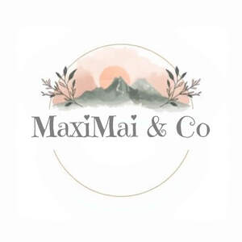

Trade Mark Journal No.2026/010 6 March 2026
UK00004343176 20 February 2026 (9,16,18,21,25,35)

- Class 9
- Digital books downloadable from the Internet; Downloadable digital assets; Downloadable digital photos; Downloadable e-books.
- Class 16
- Photo prints; Art prints; Graphic art prints; Art pictures; Photographic prints; Fine art prints; Prints; Printed art reproductions; Pictorial prints; Prints in the nature of pictures; Graphic prints; Canvas prints; Art etchings; Photographic or art mounts; Cartoon prints; Prints [engravings]; Engravings [prints]; Watercolor pictures; Paintings [pictures], framed or unframed; Lithographic prints; Giclee prints; Art paper; Graphic art books; Lithographic works of art; Color prints; Graphic prints and representations; Works of art of paper; Photographic reproductions; Photo albums; Photographs [printed]; Printed photographs; Photographic printing paper; Picture postcards; Photograph albums; Brag books [photo albums]; Photographic albums; Watercolor paintings; 3D wall art made of paper; Reproductions of paintings; Mini photo albums; Graphic reproductions; Reproductions (Graphic -); Decoration and art materials and media; Photographs; Postcards and picture postcards; Works of art made of paper; 3D wall art made of card; Collages; Art mounts; Watercolour paintings; Wall decals; Wall decorations of paper; Wall calendars; Adhesive wall decorations of paper; Illustrated wall maps; Wall maps; Stationery; Gift bags; Greetings cards; Greeting cards; Cards; Invitation cards; Christmas cards; Holiday cards; Gift cards; Birthday cards; Correspondence cards; Occasion cards; Printed cards; Announcement cards [stationery]; Note cards; Anniversary cards; Picture cards; Post cards; Visiting cards; Announcement cards; Motivational cards; Blank cards; Name cards; Collectable cards; Business cards; Paper loyalty cards; Gift wrap cards; Reference cards; Thank you cards; Calendars; Tear-off calendars; Printed calendars; Desk calendars; Calendar desk pads; Calendar desk stands; Notepads; Binders [stationery]; Stickers [stationery]; Wirebound books; Printed stationery; Organizers for stationery use; Printed brochures; Spiral-bound notebooks; Pocket books [stationery]; Posters; Printed flyers; Stencils [stationery]; Printed timetables; Timetables (Printed -); Illustrated notepads; Wall planners; Weekly planners; Notebooks; Covers for weekly planners; Monthly planners; Printed plans; Printed geographical maps; Office binders; Travel guides; Travel magazines; Daily planners; Day planners; Travel books; Travel guide books; Year planners; Pictures; Signed photographs.
- Class 18
- Tote bags; Grocery tote bags; Carry-all bags; Bags; Drawstring bags; Carry-on bags; Canvas bags; Toiletry bags; Luggage bags; Carrying bags; Duffel bags for travel; Canvas shopping bags; Cloth bags; Luggage, bags, wallets and other carriers; Reusable shopping bags; Souvenir bags; Shoulder bags; Kit bags; Bags for clothes; Garment bags; Beach bags; Travel bags; Bags for travel; Waterproof bags; All-purpose carrying bags; Camping bags; Wash bags for carrying toiletries; Gym bags; Bags for carrying pets; Hand bags; Book bags; Boot bags; Traveling bags; Weekend bags; Bags for campers; Cabin bags; Shoe bags for travel; Bum bags; Garment bags for travel; Bags (Garment -) for travel; Roller bags; Toiletry bags sold empty; Airline travel bags; Travel luggage; Travel baggage.
- Class 21
- Coasters (tableware); Travel mugs; Mugs; Cups and mugs; Glass mugs; Coffee mugs; Earthenware mugs; Ceramic mugs; Porcelain mugs; Mugs of porcelain; Insulated mugs; China mugs; Mugs of china; Drinking mugs made of porcelain; Mug racks; Vacuum mugs; Mugs made of plastic; Bottles; Insulated bottles [flasks]; Mugs made of earthenware; Mugs made of porcelain; Mugs made of china; Mug cosies; Tumblers for use as drinking glasses; Reusable bottles; Glass stoppers for bottles; Drinking bottles; Glass flasks [containers]; Drinkware; Glass cups; Vacuum bottles [insulated flasks]; Biodegradable bottles; Drinks containers; Bottle coolers; Coffee cups; Water bottles for bicycles; Tumblers [drinking vessels]; Drinking flasks for travellers; Flasks for travellers (Drinking -); Drinking flasks [for travellers]; Plastic containers for dispensing drink to pets; Thermal insulated tote bags for food or beverages; Mug sleeves; Empty water bottles for bicycles; Drinking bottles for sports; Glasses, drinking vessels and barware; Beverage glassware; Wine jugs; Beverage coolers [containers]; Water bottles for bicycles, sold empty; Water bottles; Carafes; Bottle coolers [receptacles]; Insulated containers for beverage cans, for domestic use; Reusable plastic water bottles sold empty; Tableware, cookware and containers; Containers for beverages.
- Class 25
- Clothing; Ready-to-wear clothing; Clothes; Jerseys [clothing]; Shorts [clothing]; Parts of clothing, footwear and headgear; Rainproof clothing; Waterproof clothing; Casual clothing; Bottoms [clothing]; Clothing for leisure wear; Ready-made clothing; Infant clothing; Leisure clothing; Clothing for sports; Sports clothing; Clothing for children; Clothing for babies; Tops [clothing]; Clothing for infants; Clothing for cycling; Weatherproof clothing; Water-resistant clothing; Clothing for skiing; Beach clothing; Thermal clothing; Men's clothing.
- Class 35
- Retail services for works of art provided by art galleries; Retail services in relation to pet products; Retail store services in the field of clothing; Retail services in relation to homeware; Online retail store services in relation to clothing; Retail services connected with the sale of furniture; Retail services relating to jewelry; Retail services in relation to clothing accessories; Retail services relating to clothing; Retail services in relation to fashion accessories; Online retail services relating to clothing; Online retail services relating to jewelry; Online retail services relating to toys; Retail services in relation to toys; Retail services in relation to footwear; Mail order retail services for clothing accessories; Retail services in relation to clothing; Online retail services relating to handbags; Retail services in relation to bags; Retail services in relation to jewellery; Retail services in relation to stationery supplies; Retail services connected with the sale of clothing and clothing accessories; Retail services connected with stationery; Retail services in relation to smartphones; Retail services in relation to tableware; Mail order retail services for clothing; Retail services relating to sporting goods; Digital marketing; Digital advertising services; Advertising in the field of tourism and travel; Marketing services in the field of travel; Retail services in relation to art materials; Retail services in relation to works of art; Retail services in relation to downloadable virtual works of art; Online retail services in relation to downloadable virtual works of art; Wholesale services in relation to works of art; Retail services in relation to printed matter; Affiliate marketing; Influencer marketing; Referral marketing; Blogger outreach services.
Rebecca Hellier